import torch
from torch import nn
from torch.utils.data import Dataset, DataLoader
from pathlib import Path
from PIL import Image
import glob
from torchvision.transforms import ToTensor, PILToTensor
import os
import pandas as pd
from torchvision.io import read_image
from torchvision import datasets, transforms
import matplotlib.pyplot as plt
from torchvision.utils import make_grid
import torch.nn.functional as F
import time
from pathlib import Path
from torchvision.datasets import ImageFolder
from tqdm.auto import tqdm
import matplotlib.colors as mcolors
import numpy as np
from torchinfo import summaryVariational Autoencoder
Python
Deep Learning
NLP
Part 1 of 3 in a series exploring generative models.
creds = '{"username":"jakegehri","key":"41ff660454233a25221965d475c8d92b"}'cred_path = Path('~/.kaggle/kaggle.json').expanduser()
if not cred_path.exists():
cred_path.parent.mkdir(exist_ok=True)
cred_path.write_text(creds)
cred_path.chmod(0o600)import kaggleDEVICE = 'cuda'Load and prepare data
transform = transforms.Compose([transforms.Grayscale(num_output_channels=1),
transforms.Resize(64),
transforms.CenterCrop(64),
transforms.ToTensor()])dataset = ImageFolder(root = 'shapes', transform=transform)dataset[0][0].shapetorch.Size([1, 64, 64])plt.imshow(dataset[0][0].squeeze(0))<matplotlib.image.AxesImage at 0x7fa2724ef670>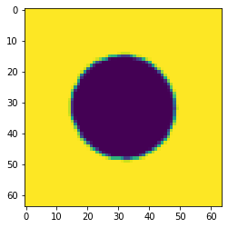
batch_size = 32dataloader = DataLoader(dataset, batch_size=batch_size, shuffle=True)def show_images(images, nmax=64):
fig, ax = plt.subplots(figsize=(8, 8))
ax.set_xticks([]); ax.set_yticks([])
ax.imshow(make_grid((images.detach()[:nmax]), nrow=8).permute(1, 2, 0))
def show_batch(dl, nmax=64):
for images in dl:
show_images(images[0], nmax)
breakshow_batch(dataloader)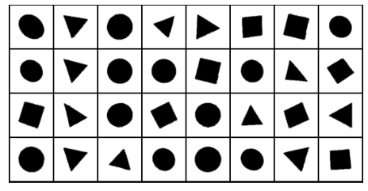
Build Autoencoder
class Encoder(nn.Module):
def __init__(self):
super().__init__()
self.encoder = nn.Sequential(
nn.Conv2d(1, 32, stride=2, kernel_size=3, padding=1), # 64 -> 32
nn.BatchNorm2d(32),
nn.LeakyReLU(0.1, inplace=True),
nn.Dropout2d(0.25),
nn.Conv2d(32, 32, kernel_size=3, padding=1),
nn.BatchNorm2d(32),
nn.LeakyReLU(0.1, inplace=True),
nn.Dropout2d(0.25),
nn.Conv2d(32, 32, kernel_size=3, padding=1),
nn.BatchNorm2d(32),
nn.LeakyReLU(0.1, inplace=True),
nn.Dropout2d(0.25),
nn.Conv2d(32, 64, stride=2, kernel_size=3, padding=1), # 32 -> 16
nn.BatchNorm2d(64),
nn.LeakyReLU(0.1, inplace=True),
nn.Dropout2d(0.25),
nn.Conv2d(64, 64, kernel_size=3, padding=1),
nn.BatchNorm2d(64),
nn.LeakyReLU(0.1, inplace=True),
nn.Dropout2d(0.25),
nn.Conv2d(64, 64, stride=2 ,kernel_size=3, padding=1), #16 -> 8
nn.BatchNorm2d(64),
nn.LeakyReLU(0.1, inplace=True),
nn.Dropout2d(0.25),
nn.Flatten(),
nn.Linear(4096, 2)
)
def forward(self, x):
return self.encoder(x)X = next(iter(dataloader))[0]
enc = Encoder()
z = enc(X)
X.shape, z.shape(torch.Size([32, 1, 64, 64]), torch.Size([32, 2]))class Reshape(nn.Module):
def __init__(self, *args):
super().__init__()
self.shape = args
def forward(self, x):
return x.view(self.shape)class Trim(nn.Module):
def __init__(self, *args):
super().__init__()
def forward(self, x):
return x[:, :, :64, :64]class Decoder(nn.Module):
def __init__(self):
super().__init__()
self.linear = nn.Sequential(
nn.Linear(2, 4096),
nn.LeakyReLU(0.01),
)
self.decoder = nn.Sequential(
nn.ConvTranspose2d(64, 64, stride=2, kernel_size=3, padding=1, output_padding=1),
nn.BatchNorm2d(64),
nn.LeakyReLU(0.1, inplace=True),
nn.Dropout2d(0.25),
nn.ConvTranspose2d(64, 64, stride=1, kernel_size=3, padding=1),
nn.BatchNorm2d(64),
nn.LeakyReLU(0.1, inplace=True),
nn.Dropout2d(0.25),
nn.ConvTranspose2d(64, 32, stride=2, kernel_size=3, padding=1, output_padding=1),
nn.BatchNorm2d(32),
nn.LeakyReLU(0.1, inplace=True),
nn.Dropout2d(0.25),
nn.ConvTranspose2d(32, 32, stride=1, kernel_size=3, padding=1),
nn.BatchNorm2d(32),
nn.LeakyReLU(0.1, inplace=True),
nn.Dropout2d(0.25),
nn.ConvTranspose2d(32, 32, stride=1, kernel_size=3, padding=1),
nn.BatchNorm2d(32),
nn.LeakyReLU(0.1, inplace=True),
nn.Dropout2d(0.25),
nn.ConvTranspose2d(32, 1, stride = 2, kernel_size=3, padding=1, output_padding=1),
Trim(),
nn.Sigmoid()
)
def forward(self, z):
z = self.linear(z)
z = torch.reshape(z, (-1, 64, 8, 8))
z = self.decoder(z)
return zdecoder = Decoder()
X_prime = decoder(z)X.shape, X_prime.shape(torch.Size([32, 1, 64, 64]), torch.Size([32, 1, 64, 64]))plt.imshow(X_prime[0].cpu().permute(1, 2, 0).detach().numpy())<matplotlib.image.AxesImage at 0x7fa272323670>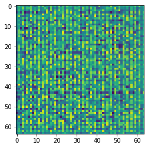
class Autoencoder(nn.Module):
def __init__(self):
super().__init__()
self.encoder = Encoder()
self.decoder = Decoder()
def forward(self, x):
return self.decoder(self.encoder(x))ae = Autoencoder().to(DEVICE)
loss_fn = F.mse_loss
optimizer = torch.optim.Adam(params=ae.parameters(), lr=0.0005)summary(ae, (batch_size, 1, 64, 64))==========================================================================================
Layer (type:depth-idx) Output Shape Param #
==========================================================================================
Autoencoder [32, 1, 64, 64] --
├─Encoder: 1-1 [32, 2] --
│ └─Sequential: 2-1 [32, 2] --
│ │ └─Conv2d: 3-1 [32, 32, 32, 32] 320
│ │ └─BatchNorm2d: 3-2 [32, 32, 32, 32] 64
│ │ └─LeakyReLU: 3-3 [32, 32, 32, 32] --
│ │ └─Dropout2d: 3-4 [32, 32, 32, 32] --
│ │ └─Conv2d: 3-5 [32, 32, 32, 32] 9,248
│ │ └─BatchNorm2d: 3-6 [32, 32, 32, 32] 64
│ │ └─LeakyReLU: 3-7 [32, 32, 32, 32] --
│ │ └─Dropout2d: 3-8 [32, 32, 32, 32] --
│ │ └─Conv2d: 3-9 [32, 32, 32, 32] 9,248
│ │ └─BatchNorm2d: 3-10 [32, 32, 32, 32] 64
│ │ └─LeakyReLU: 3-11 [32, 32, 32, 32] --
│ │ └─Dropout2d: 3-12 [32, 32, 32, 32] --
│ │ └─Conv2d: 3-13 [32, 64, 16, 16] 18,496
│ │ └─BatchNorm2d: 3-14 [32, 64, 16, 16] 128
│ │ └─LeakyReLU: 3-15 [32, 64, 16, 16] --
│ │ └─Dropout2d: 3-16 [32, 64, 16, 16] --
│ │ └─Conv2d: 3-17 [32, 64, 16, 16] 36,928
│ │ └─BatchNorm2d: 3-18 [32, 64, 16, 16] 128
│ │ └─LeakyReLU: 3-19 [32, 64, 16, 16] --
│ │ └─Dropout2d: 3-20 [32, 64, 16, 16] --
│ │ └─Conv2d: 3-21 [32, 64, 8, 8] 36,928
│ │ └─BatchNorm2d: 3-22 [32, 64, 8, 8] 128
│ │ └─LeakyReLU: 3-23 [32, 64, 8, 8] --
│ │ └─Dropout2d: 3-24 [32, 64, 8, 8] --
│ │ └─Flatten: 3-25 [32, 4096] --
│ │ └─Linear: 3-26 [32, 2] 8,194
├─Decoder: 1-2 [32, 1, 64, 64] --
│ └─Sequential: 2-2 [32, 4096] --
│ │ └─Linear: 3-27 [32, 4096] 12,288
│ │ └─LeakyReLU: 3-28 [32, 4096] --
│ └─Sequential: 2-3 [32, 1, 64, 64] --
│ │ └─ConvTranspose2d: 3-29 [32, 64, 16, 16] 36,928
│ │ └─BatchNorm2d: 3-30 [32, 64, 16, 16] 128
│ │ └─LeakyReLU: 3-31 [32, 64, 16, 16] --
│ │ └─Dropout2d: 3-32 [32, 64, 16, 16] --
│ │ └─ConvTranspose2d: 3-33 [32, 64, 16, 16] 36,928
│ │ └─BatchNorm2d: 3-34 [32, 64, 16, 16] 128
│ │ └─LeakyReLU: 3-35 [32, 64, 16, 16] --
│ │ └─Dropout2d: 3-36 [32, 64, 16, 16] --
│ │ └─ConvTranspose2d: 3-37 [32, 32, 32, 32] 18,464
│ │ └─BatchNorm2d: 3-38 [32, 32, 32, 32] 64
│ │ └─LeakyReLU: 3-39 [32, 32, 32, 32] --
│ │ └─Dropout2d: 3-40 [32, 32, 32, 32] --
│ │ └─ConvTranspose2d: 3-41 [32, 32, 32, 32] 9,248
│ │ └─BatchNorm2d: 3-42 [32, 32, 32, 32] 64
│ │ └─LeakyReLU: 3-43 [32, 32, 32, 32] --
│ │ └─Dropout2d: 3-44 [32, 32, 32, 32] --
│ │ └─ConvTranspose2d: 3-45 [32, 32, 32, 32] 9,248
│ │ └─BatchNorm2d: 3-46 [32, 32, 32, 32] 64
│ │ └─LeakyReLU: 3-47 [32, 32, 32, 32] --
│ │ └─Dropout2d: 3-48 [32, 32, 32, 32] --
│ │ └─ConvTranspose2d: 3-49 [32, 1, 64, 64] 289
│ │ └─Trim: 3-50 [32, 1, 64, 64] --
│ │ └─Sigmoid: 3-51 [32, 1, 64, 64] --
==========================================================================================
Total params: 243,779
Trainable params: 243,779
Non-trainable params: 0
Total mult-adds (G): 3.00
==========================================================================================
Input size (MB): 0.52
Forward/backward pass size (MB): 138.41
Params size (MB): 0.98
Estimated Total Size (MB): 139.91
==========================================================================================epochs = 50
outputs = []
losses = []
for epoch in tqdm(range(epochs)):
for batch, (image, _) in tqdm(enumerate(dataloader)):
image = image.to(DEVICE)
reconstructed = ae(image)
loss = loss_fn(reconstructed, image, reduction = 'none')
loss = loss.view(batch_size, -1).sum(axis=1)
loss = loss.mean()
optimizer.zero_grad()
loss.backward()
optimizer.step()
losses.append(loss.detach().cpu().numpy())
outputs.append((epoch, image, reconstructed))plt.plot(losses)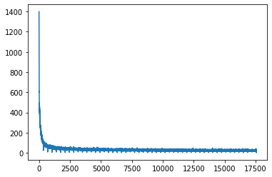
plt.imshow(image[0].reshape(-1, 64, 64).cpu().permute(1, 2, 0))<matplotlib.image.AxesImage at 0x7fa265c14a60>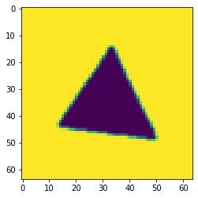
plt.imshow(reconstructed[0].detach().reshape(-1, 64, 64).cpu().permute(1, 2, 0))<matplotlib.image.AxesImage at 0x7fa265bd6340>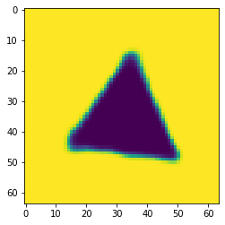
def plot_latent_space_with_labels(num_classes, dataloader, model, device):
d = {i:[] for i in range(num_classes)}
model.eval()
with torch.no_grad():
for i, (features, targets) in enumerate(dataloader):
features = features.to(device)
targets = targets.to(device)
embedding = model.encoder(features)
for i in range(num_classes):
if i in targets:
mask = targets == i
d[i].append(embedding[mask].to('cpu').numpy())
colors = list(mcolors.TABLEAU_COLORS.items())
for i in range(num_classes):
d[i] = np.concatenate(d[i])
plt.scatter(
d[i][:, 0], d[i][:, 1],
color=colors[i][1],
label=f'{i}',
alpha=0.5)
plt.legend()plot_latent_space_with_labels(
num_classes=3,
dataloader=dataloader,
model=ae,
device=DEVICE)
plt.legend()
plt.show()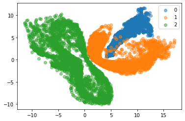
Beta - Variational Autoencoder
class VAE(nn.Module):
def __init__(self):
super().__init__()
self.encoder = nn.Sequential(
nn.Conv2d(1, 32, stride=2, kernel_size=3, padding=1), # 64 -> 32
nn.BatchNorm2d(32),
nn.LeakyReLU(0.1, inplace=True),
nn.Dropout2d(0.25),
nn.Conv2d(32, 32, kernel_size=3, padding=1),
nn.BatchNorm2d(32),
nn.LeakyReLU(0.1, inplace=True),
nn.Dropout2d(0.25),
nn.Conv2d(32, 32, kernel_size=3, padding=1),
nn.BatchNorm2d(32),
nn.LeakyReLU(0.1, inplace=True),
nn.Dropout2d(0.25),
nn.Conv2d(32, 64, stride=2, kernel_size=3, padding=1), # 32 -> 16
nn.BatchNorm2d(64),
nn.LeakyReLU(0.1, inplace=True),
nn.Dropout2d(0.25),
nn.Conv2d(64, 64, kernel_size=3, padding=1),
nn.BatchNorm2d(64),
nn.LeakyReLU(0.1, inplace=True),
nn.Dropout2d(0.25),
nn.Conv2d(64, 64, stride=2 ,kernel_size=3, padding=1), #16 -> 8
nn.BatchNorm2d(64),
nn.LeakyReLU(0.1, inplace=True),
nn.Dropout2d(0.25),
nn.Flatten(),
)
self.z_mean = nn.Linear(4096, 2)
self.z_log_var = nn.Linear(4096, 2)
self.decoder = nn.Sequential(
nn.Linear(2, 4096),
Reshape(-1, 64, 8, 8),
nn.ConvTranspose2d(64, 64, stride=2, kernel_size=3, padding=1, output_padding=1),
nn.BatchNorm2d(64),
nn.LeakyReLU(0.1, inplace=True),
nn.Dropout2d(0.25),
nn.ConvTranspose2d(64, 64, stride=1, kernel_size=3, padding=1),
nn.BatchNorm2d(64),
nn.LeakyReLU(0.1, inplace=True),
nn.Dropout2d(0.25),
nn.ConvTranspose2d(64, 32, stride=2, kernel_size=3, padding=1, output_padding=1),
nn.BatchNorm2d(32),
nn.LeakyReLU(0.1, inplace=True),
nn.Dropout2d(0.25),
nn.ConvTranspose2d(32, 32, stride=1, kernel_size=3, padding=1),
nn.BatchNorm2d(32),
nn.LeakyReLU(0.1, inplace=True),
nn.Dropout2d(0.25),
nn.ConvTranspose2d(32, 32, stride=1, kernel_size=3, padding=1),
nn.BatchNorm2d(32),
nn.LeakyReLU(0.1, inplace=True),
nn.Dropout2d(0.25),
nn.ConvTranspose2d(32, 1, stride = 2, kernel_size=3, padding=1, output_padding=1),
#Trim(),
nn.Sigmoid()
)
def reparameterize(self, z_mu, z_log_var):
eps = torch.randn(z_mu.size(0), z_mu.size(1)).to(z_mu.get_device())
z = z_mu + eps * torch.exp(z_log_var/2.)
return z
def encoding_fn(self, x):
x = self.encoder(x)
z_mean, z_log_var = self.z_mean(x), self.z_log_var(x)
encoded = self.reparameterize(z_mean, z_log_var)
return encoded
def forward(self, x):
x = self.encoder(x)
z_mean, z_log_var = self.z_mean(x), self.z_log_var(x)
encoded = self.reparameterize(z_mean, z_log_var)
decoded = self.decoder(encoded)
return encoded, z_mean, z_log_var, decoded
vae = VAE()
vae.to(DEVICE)
reconstruction_loss_fn = F.mse_loss
optimizer = torch.optim.Adam(params=vae.parameters(), lr=0.00005)summary(vae, (32, 1, 64, 64))==========================================================================================
Layer (type:depth-idx) Output Shape Param #
==========================================================================================
VAE [32, 2] --
├─Sequential: 1-1 [32, 4096] --
│ └─Conv2d: 2-1 [32, 32, 32, 32] 320
│ └─BatchNorm2d: 2-2 [32, 32, 32, 32] 64
│ └─LeakyReLU: 2-3 [32, 32, 32, 32] --
│ └─Dropout2d: 2-4 [32, 32, 32, 32] --
│ └─Conv2d: 2-5 [32, 32, 32, 32] 9,248
│ └─BatchNorm2d: 2-6 [32, 32, 32, 32] 64
│ └─LeakyReLU: 2-7 [32, 32, 32, 32] --
│ └─Dropout2d: 2-8 [32, 32, 32, 32] --
│ └─Conv2d: 2-9 [32, 32, 32, 32] 9,248
│ └─BatchNorm2d: 2-10 [32, 32, 32, 32] 64
│ └─LeakyReLU: 2-11 [32, 32, 32, 32] --
│ └─Dropout2d: 2-12 [32, 32, 32, 32] --
│ └─Conv2d: 2-13 [32, 64, 16, 16] 18,496
│ └─BatchNorm2d: 2-14 [32, 64, 16, 16] 128
│ └─LeakyReLU: 2-15 [32, 64, 16, 16] --
│ └─Dropout2d: 2-16 [32, 64, 16, 16] --
│ └─Conv2d: 2-17 [32, 64, 16, 16] 36,928
│ └─BatchNorm2d: 2-18 [32, 64, 16, 16] 128
│ └─LeakyReLU: 2-19 [32, 64, 16, 16] --
│ └─Dropout2d: 2-20 [32, 64, 16, 16] --
│ └─Conv2d: 2-21 [32, 64, 8, 8] 36,928
│ └─BatchNorm2d: 2-22 [32, 64, 8, 8] 128
│ └─LeakyReLU: 2-23 [32, 64, 8, 8] --
│ └─Dropout2d: 2-24 [32, 64, 8, 8] --
│ └─Flatten: 2-25 [32, 4096] --
├─Linear: 1-2 [32, 2] 8,194
├─Linear: 1-3 [32, 2] 8,194
├─Sequential: 1-4 [32, 1, 64, 64] --
│ └─Linear: 2-26 [32, 4096] 12,288
│ └─Reshape: 2-27 [32, 64, 8, 8] --
│ └─ConvTranspose2d: 2-28 [32, 64, 16, 16] 36,928
│ └─BatchNorm2d: 2-29 [32, 64, 16, 16] 128
│ └─LeakyReLU: 2-30 [32, 64, 16, 16] --
│ └─Dropout2d: 2-31 [32, 64, 16, 16] --
│ └─ConvTranspose2d: 2-32 [32, 64, 16, 16] 36,928
│ └─BatchNorm2d: 2-33 [32, 64, 16, 16] 128
│ └─LeakyReLU: 2-34 [32, 64, 16, 16] --
│ └─Dropout2d: 2-35 [32, 64, 16, 16] --
│ └─ConvTranspose2d: 2-36 [32, 32, 32, 32] 18,464
│ └─BatchNorm2d: 2-37 [32, 32, 32, 32] 64
│ └─LeakyReLU: 2-38 [32, 32, 32, 32] --
│ └─Dropout2d: 2-39 [32, 32, 32, 32] --
│ └─ConvTranspose2d: 2-40 [32, 32, 32, 32] 9,248
│ └─BatchNorm2d: 2-41 [32, 32, 32, 32] 64
│ └─LeakyReLU: 2-42 [32, 32, 32, 32] --
│ └─Dropout2d: 2-43 [32, 32, 32, 32] --
│ └─ConvTranspose2d: 2-44 [32, 32, 32, 32] 9,248
│ └─BatchNorm2d: 2-45 [32, 32, 32, 32] 64
│ └─LeakyReLU: 2-46 [32, 32, 32, 32] --
│ └─Dropout2d: 2-47 [32, 32, 32, 32] --
│ └─ConvTranspose2d: 2-48 [32, 1, 64, 64] 289
│ └─Sigmoid: 2-49 [32, 1, 64, 64] --
==========================================================================================
Total params: 251,973
Trainable params: 251,973
Non-trainable params: 0
Total mult-adds (G): 3.00
==========================================================================================
Input size (MB): 0.52
Forward/backward pass size (MB): 138.41
Params size (MB): 1.01
Estimated Total Size (MB): 139.95
==========================================================================================epochs = 50
beta = 6
vae_outputs = []
combined_losses = []
reconstruction_losses = []
kl_losses = []
for epoch in tqdm(range(epochs)):
for batch, (image, _) in tqdm(enumerate(dataloader)):
image = image.to(DEVICE)
encoded, z_mean, z_var, decoded = vae(image)
kl_div = -0.5 * torch.sum(1 + z_var - z_mean**2 - torch.exp(z_var), axis=1)
batch_size = kl_div.size(0)
kl_div = kl_div.mean()
reconstruction_loss = reconstruction_loss_fn(decoded, image, reduction = 'none')
reconstruction_loss = reconstruction_loss.view(batch_size, -1).sum(axis=1)
reconstruction_loss = reconstruction_loss.mean()
loss = reconstruction_loss + beta*kl_div
optimizer.zero_grad()
loss.backward()
optimizer.step()
combined_losses.append(loss.detach().cpu().numpy())
reconstruction_losses.append(reconstruction_loss.detach().cpu().numpy())
kl_losses.append(kl_div.detach().cpu().numpy())
vae_outputs.append((epoch, image, decoded))plt.plot(combined_losses)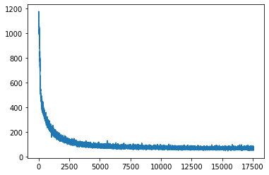
plt.plot(reconstruction_losses)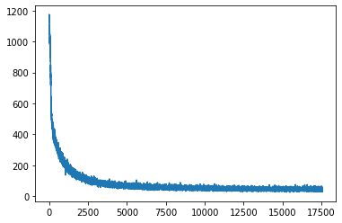
plt.plot(kl_losses)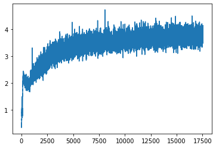
def plot_latent_space_with_labels(num_classes, dataloader, encoding_fn, device):
d = {i:[] for i in range(num_classes)}
with torch.no_grad():
for i, (features, targets) in enumerate(dataloader):
features = features.to(device)
targets = targets.to(device)
embedding = encoding_fn(features)
for i in range(num_classes):
if i in targets:
mask = targets == i
d[i].append(embedding[mask].to('cpu').numpy())
colors = list(mcolors.TABLEAU_COLORS.items())
for i in range(num_classes):
d[i] = np.concatenate(d[i])
plt.scatter(
d[i][:, 0], d[i][:, 1],
color=colors[i][1],
label=f'{i}',
alpha=0.5)
plt.legend()plot_latent_space_with_labels(
num_classes=3,
dataloader=dataloader,
encoding_fn=vae.encoding_fn,
device=DEVICE)
plt.legend()
plt.show()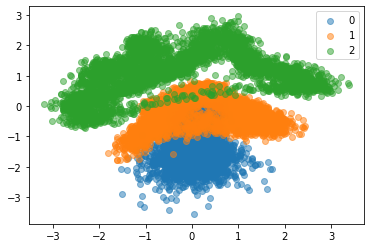
y_axis = torch.arange(-1.2, 2, 0.2)
x_axis = torch.zeros(16)
samples = torch.stack((x_axis, y_axis), dim=1).to(DEVICE)samplestensor([[ 0.0000e+00, -1.2000e+00],
[ 0.0000e+00, -1.0000e+00],
[ 0.0000e+00, -8.0000e-01],
[ 0.0000e+00, -6.0000e-01],
[ 0.0000e+00, -4.0000e-01],
[ 0.0000e+00, -2.0000e-01],
[ 0.0000e+00, -4.7684e-08],
[ 0.0000e+00, 2.0000e-01],
[ 0.0000e+00, 4.0000e-01],
[ 0.0000e+00, 6.0000e-01],
[ 0.0000e+00, 8.0000e-01],
[ 0.0000e+00, 1.0000e+00],
[ 0.0000e+00, 1.2000e+00],
[ 0.0000e+00, 1.4000e+00],
[ 0.0000e+00, 1.6000e+00],
[ 0.0000e+00, 1.8000e+00]], device='cuda:0')def show_images(images, nmax=64):
fig, ax = plt.subplots(figsize=(8, 8))
ax.set_xticks([]); ax.set_yticks([])
ax.imshow(make_grid((images.detach()[:nmax]), nrow=8).permute(1, 2, 0))img_smaples = []
for sample in samples:
vae.eval()
with torch.no_grad():
sample_out = vae.decoder(sample)
img_smaples.append(sample_out.squeeze(0).detach().cpu())grid = make_grid(img_smaples)def show(imgs):
if not isinstance(imgs, list):
imgs = [imgs]
fig, axs = plt.subplots(ncols=len(imgs), squeeze=False, figsize=(12,12))
for i, img in enumerate(imgs):
img = img.detach()
img = transforms.functional.to_pil_image(img)
axs[i, 0].imshow(np.asarray(img))
axs[i, 0].set(xticklabels=[], yticklabels=[], xticks=[], yticks=[])show(grid)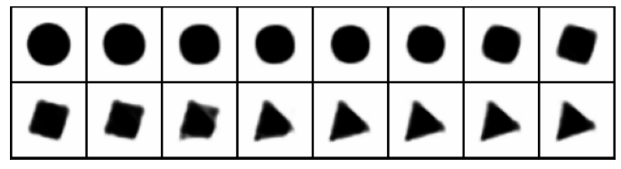
vae.eval()
with torch.no_grad():
sample_out = vae.decoder(torch.tensor([0., 0.8]).cuda())
plt.imshow(sample_out.detach().reshape(-1, 64, 64).cpu().permute(1, 2, 0))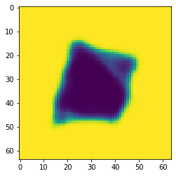